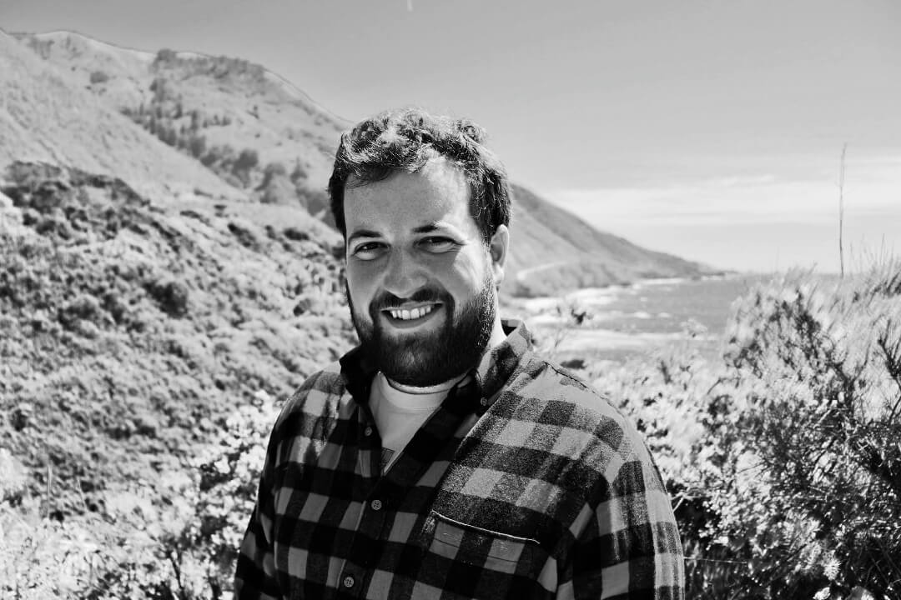

Stewart Engart (b. 1991, he/him) is a Durham, NC based composer, performer, sound artist, and software engineer working in the fields of experimental electronic music, audiovisual installation, and innovative chamber music.
Stewart Engart (b. 1991, he/him) is a Durham, NC based composer, performer, sound artist, and software engineer working in the fields of experimental electronic music, audiovisual installation, and innovative chamber music. His work explores computer-assisted musical form and gesture, as well as experimental synthesis techniques.
Stewart recently completed his PhD dissertation titled "Composing in Latent Space: Music Information Retrieval Driven Algorithmic Composition" at the University of California, Santa Barbara where he studied with Clarence Barlow, Joao Pedro Oliveira, Curtis Roads, and Andrew Tholl.
Stewart Engart (b. 1991, Hickory, NC, he/him) is a Durham, NC based composer, performer, sound artist, and software engineer working in the fields of experimental electronic music, audiovisual installation, and innovative chamber music. His work explores computer-assisted musical form and gesture, as well as experimental synthesis techniques.
Engart's works have recently been performed by Transient Canvas, HOCKET, New Music Ensemble, Würzburg (Robert HP Platz), Henrique Portovedo, the Moscow Contemporary Music Ensemble, Florida State University Crumhorn Ensemble and the Dunamis Duo.
Engart's electronic music has recently been presented at the International Computer Music Conference (Chile and Ireland), the Society for Electroacoustic Music in the United States, the New York City Electronic Music Festival, L'atelier de Création Sonore et Musicale 116 (Japan), the California Electronic Music Exchange Concerts (Stanford/CCRMA, CalArts, UCSD, Mills College, UCSB), the International Conference on Live Interfaces (Portugal), and I Encontro de LiveLoopists (Portugal).
Additionally he is interested in the restoration and preservation of early audio cylinders, Engart works as the Cylinder Audio Engineer at the UCSB Cylinder Audio Archive. In this role he has digitized and restored cylinders dating from 1890-1929, updated digitization and metadata work-flows, and created documentation of best practices.
Engart recently completed his PhD dissertation titled "Composing in Latent Space: Music Information Retrieval Driven Algorithmic Composition" at the University of California, Santa Barbara where he studied with Clarence Barlow, Joao Pedro Oliveira, Curtis Roads, and Andrew Tholl.
Prior to his time at UCSB, he received a BM and BA from the University of North Carolina, studying with Allen Anderson, Stephen Anderson, and Lee Weisert, and a MM from the University of Georgia, studying with Adrian Childs and Peter Van Zandt Lane, where he was a Graduate Research Assistant for Ideas for Creative Exploration (ICE), an interdisciplinary initiative for advanced research in the arts.